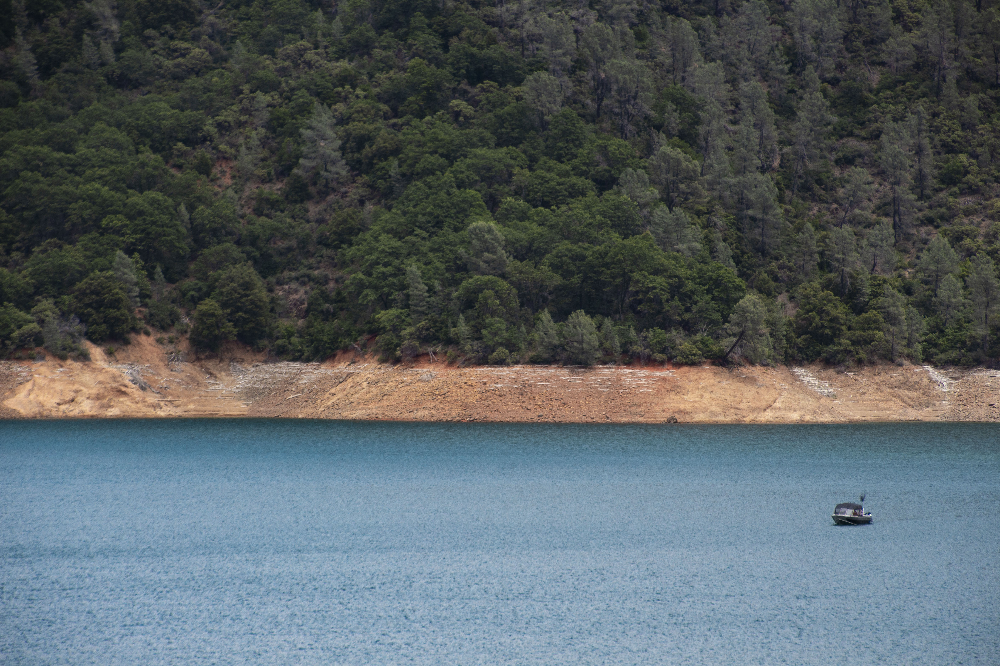
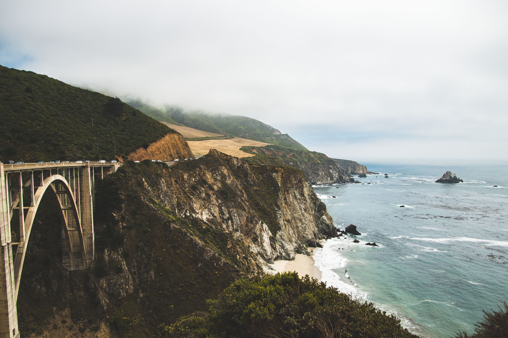
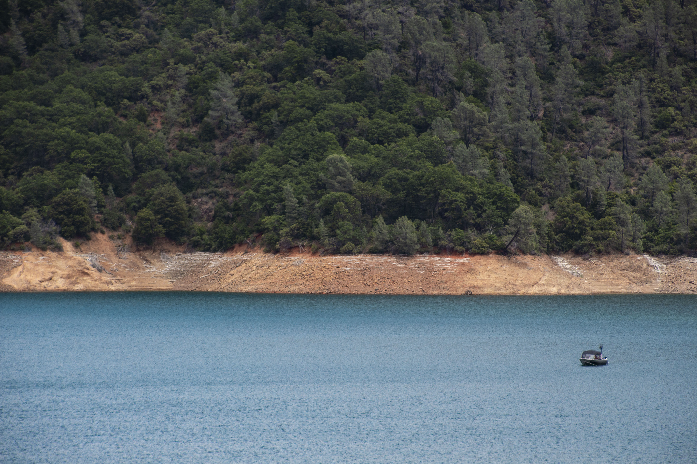
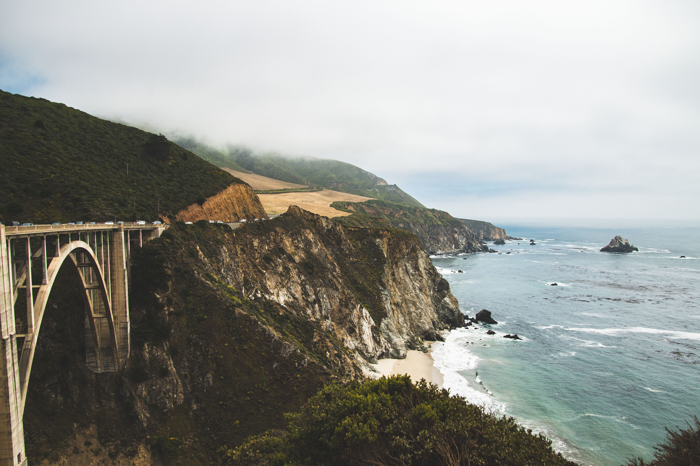
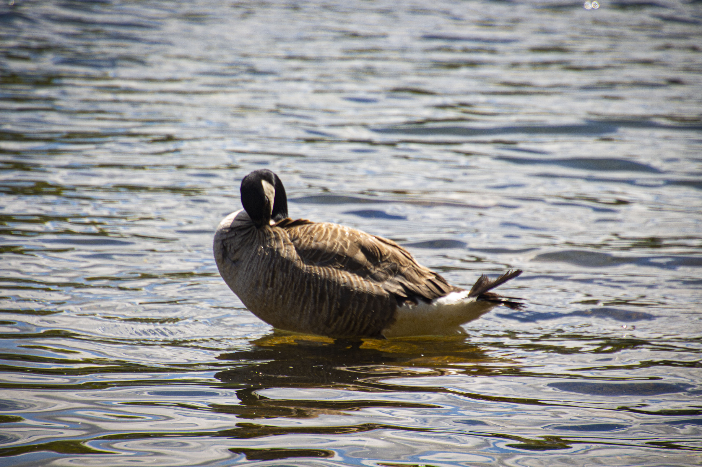
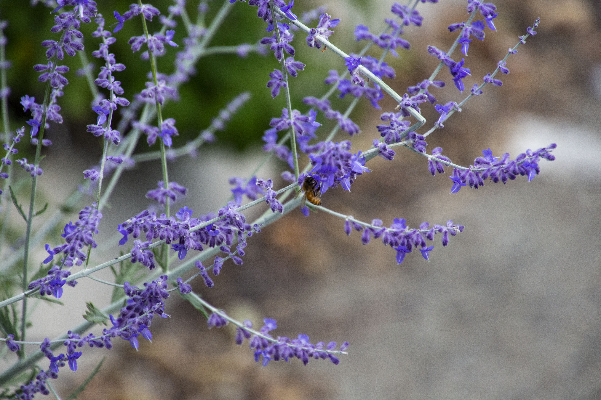
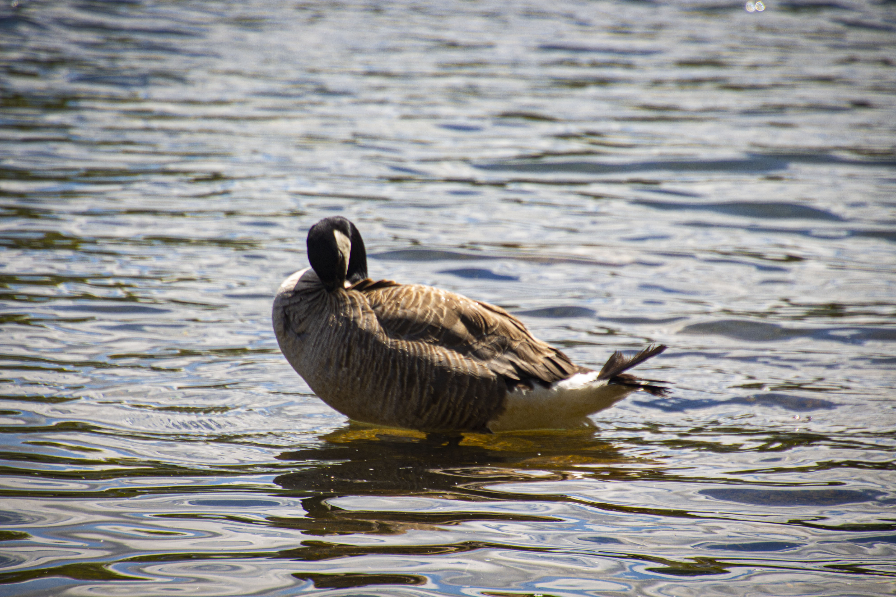
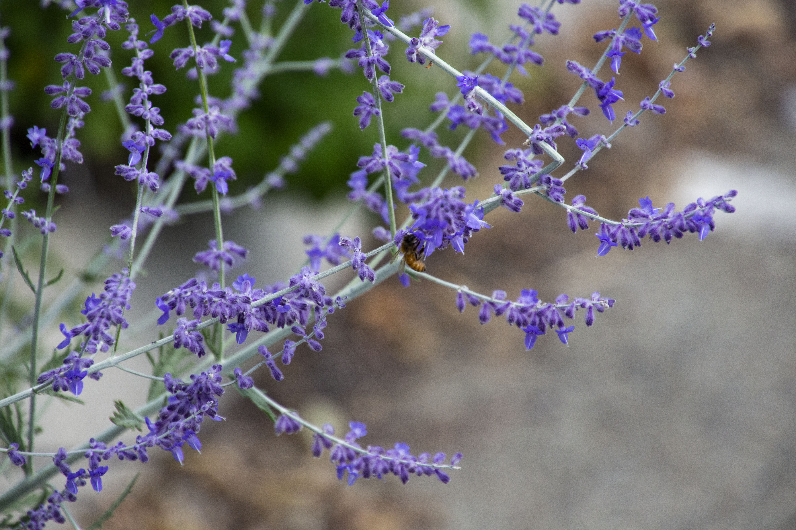

Welcome to my photo page!
I developed an interest in photography after my father gave me his old Canon EOS Rebel T5i. Since then, I use photograhy to explore and push my creative boundaries.
Checkout my photography instagram page here.
I developed an interest in photography after my father gave me his old Canon EOS Rebel T5i. Since then, I use photograhy to explore and push my creative boundaries.
Checkout my photography instagram page here.

 





 


